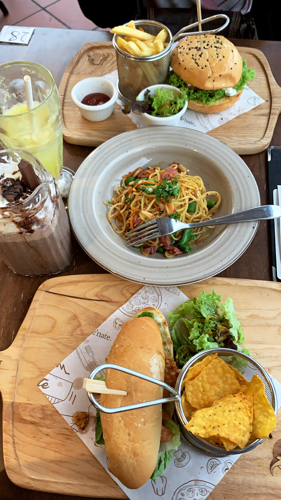

Food Hunting Photo
Home
Profile
Contact
Family
Education
I enjoy exploring different restaurants and looking for new places to dine, especially cafes or dessert shops because I love drinking coffee so much. So, below are some images and boomerangs I took of various foods and beverages.

back to top